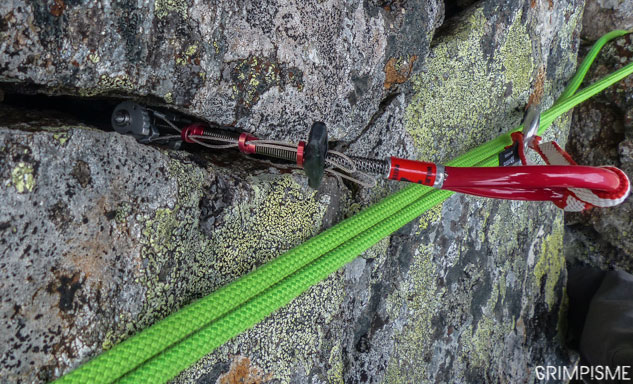
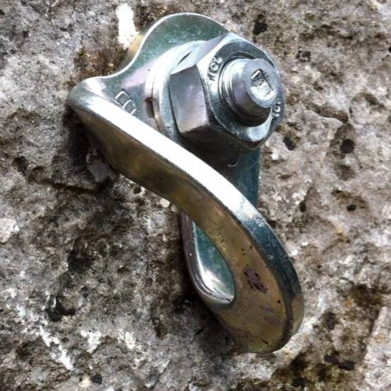
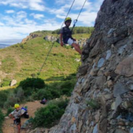
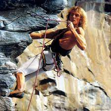
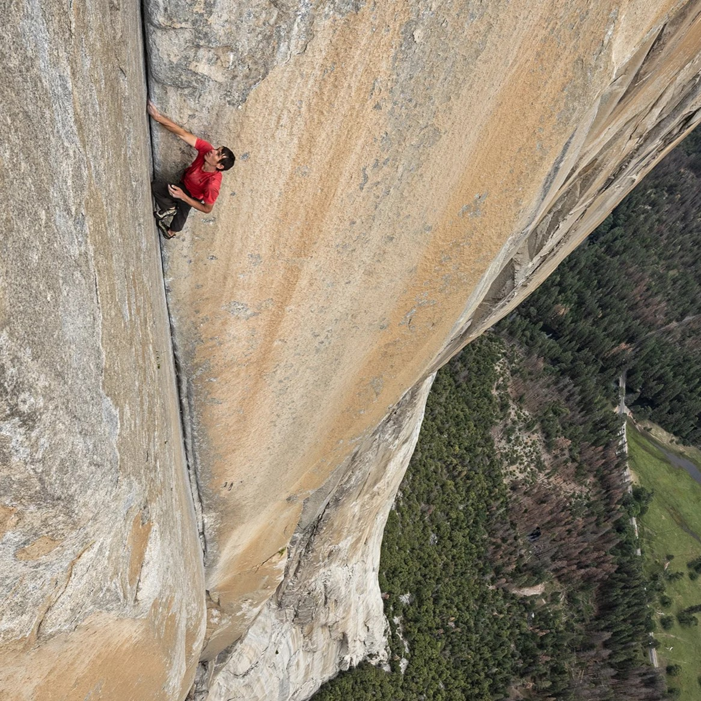

La Difficulté
La Difficulté
L'escalade "difficulté" est la discipline la plus répandue, elle consiste à monter sur un mur, une falaise.
Grimper "à l'ancienne" nécessite d'utiliser des coinceurs que l'on vient insérer dans des failles, crevasses pour avoir des points d'ancrage.


Aujourd'hui de plus en plus de falaises sont équipées de rivets ou "split" directement installés dans la roche qui est bien plus sécuritaire et solide.
Il y a plusieurs méthodes de grimpe.
La plus répandue et la plus simple: La grimpe "en second" ou en "moulinette"
consiste à avoir la corde d'assurage accrochée en haut du mur.


Puis on a la grimpe "en tête" où la corde n'est pas accrochée en haut du mur, c'est au grimpeur de l'accrocher à intervalles réguliers sur des splits ou des coinceurs pour être en sécurité.
La dernière, qui est aussi la plus dangereuse, le "free solo" qui consiste à monter les falaises/murs sans aucun équipement de sécurité et en autonomie.
